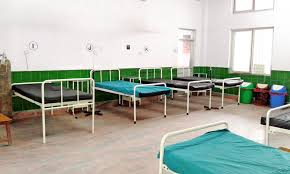

Nepal

Snakebite patients up in Bheri Hospital
By HIMALAYAN NEWS SERVICE
Published: 11:45 am Aug 03, 2020
A man standing on the premises of Bheri Hospital in Nepalgunj, Banke district, in October, 2017. Photo courtesy: YewNop Xtha A man standing on the premises of Bheri Hospital in Nepalgunj, Banke district, in October, 2017. Photo courtesy: YewNop Xtha Nepalgunj, August 2 The number of snakebite patients has increased in Nepalgunj-based Bheri Hospital of late. Snakebite patients were admitted to the emergency and ICU wards after their numbers surged with the beginning of monsoon. As many as 10 to 15 snakebite patients reach the hospital for treatment on a daily basis. Keeping in mind the COV- ID-19 pandemic and lack of ventilators, health facilities in Kailali, Bardiya, Dang and Surkhet districts have referred snakebite patients to Bheri Hospital. The emergency, ICU and general wards in the hospital were packed with snakebite patients. Patients are compelled to reach Bheri Hospital after walking five to six hours when local health facilities could not provide treatment. There are six beds in the ICU and six ventilators in Bheri Hospital. ICU Chief at the hospital Dr Paras Pandey said snakebite patients had occupied most of the beds in the intensive care unit. Three minors in Dang, Banke and Kailali died on the way to hospital this year as they could not reach the health facility on time. Similarly, two persons died while being treated in ICU. As many as 150 snakebite patients were admitted to the hospital. Of them, 45 have been kept inside the ventilator. Meanwhile, doctors have advised people to use mosquito nets while sleeping and to use torchlight when going outside the house at night during monsoon. A version of this article appears in e-paper on August 2, 2020, of The Himalayan Times.